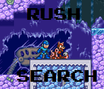

Rush Search first made its debut in Megaman 7. It could be found pretty early in the game, as all you need to do was make some really tricky jumps in Freeze Man's stage to get it, although said jumps were pretty difficult and it could be tempting to just wait until you've got Rush Jet or Super Adapter to fly over it. At any rate, when Rush Search is used Rush will teleport right in front of you and begin to dig. What he will find is generally random; he'll pull up anything from useful things like health & energy refills and bolts, to random knick-knacks like shoes, false teeth, and toy robots. And there's always the chance that he'll just not find anything or fall asleep. It should also be noted that Rush will teleport away if he's hit while digging, so it's adviseable to make the area as free of enemies as possible before digging, and you can fire while he's digging (but no charge shots) to help aid him. Thankfully the energy consumption on him is pretty good.
Of course, there are plenty of key items in specific locations in Megaman 7. Every item that can be bought in Auto's shop can be found in stages, and Rush Search is often the method to obtaining these items. Sometimes there may be landmarks on the terrain or otherwise that will signal a good place to go for a dig (like Wily's portrait in Shade Man's stage), and other times you've just gotta search around (lawl). Aside from the big-name items like the Energy Balancer, Exit Part, and Rocket Punch, Rush Search can be used to find other items like large energy refills and giant bolts. These are often found in secret rooms and other special spots, but are well worth it when obtained. It's also worth noting that Rush will bark if there's a nearby item or pathway that leads to something good.
Come Megaman & Bass, Rush Search was brought back as a shop item. He had pretty much the same function, but his main purpose was to help find CDs for the robot database. 100 CDs were spread across different stages in MM&B, and quite a few of them were underground. Thankfully, there was an item that allowed you to see where you needed to dig, which helped a lot. Of course, Rush still took damage if struck while digging, and there was a certain CD that was a nightmare to get due to this (you all know which one I'm talking about). Rush still proved useful in that regard but didn't really hold much water otherwise, as Eddie and Beat had outclassed him in terms of being useful outside of disc collecting.
Overall Rush Search was pretty handy but was toned down in his 2nd (and final) appearance. I preferred him a lot more in MM7 as his ability to scout was nice and the occasional health item you may get was always welcome. Really got the whole dog/owner dynamic down even moreso than Rush's other (and arguably more useful) incarnations. Counting both games I'd have to give Rock's best friend a 7/10.